LRT-1 updates
Trains that are being used for Cavite Extension trial run:
2nd gen (1124-1126-1127-1121)
1st gen (1061-1062-1063)
3rd gen (1221-1238-1223-1224)
3rd gen (1209-1210-1211-1212)
4th gen (13045-13046-13047-13048)
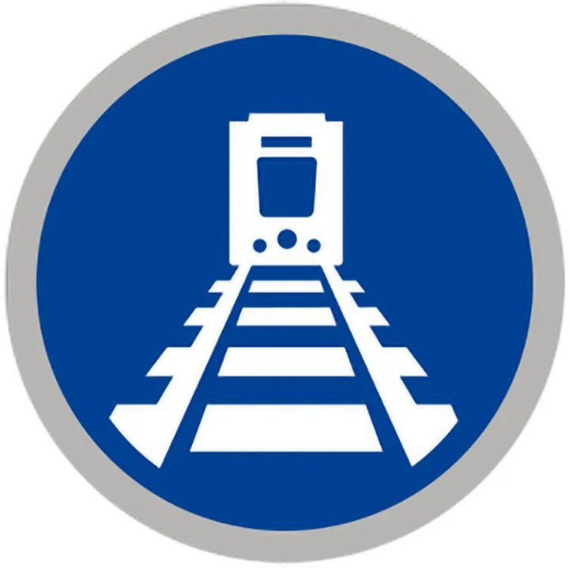
Light Rail Manila Corporation

January 10, 2024 at 5:05 PM
LRT-1 Cavite Extension news
We are excited to share that both our 1st generation (LRVs 1061-1062-1063) and 3rd generation (LRVs 1221-1238-1223-1224) trains are already undergoing rigorous test runs along the tracks of LRT-1 Cavite Extension Phase 1.
This is after the successful test run of our 2nd generation trains held last December 2023.
This crucial phase will allow us to ensure a safe, smooth, and seamless ride for passengers. The test runs aim to check the compatibility with the new tracks and overhead catenary system, as well as test various speed, acceleration, and braking performance.
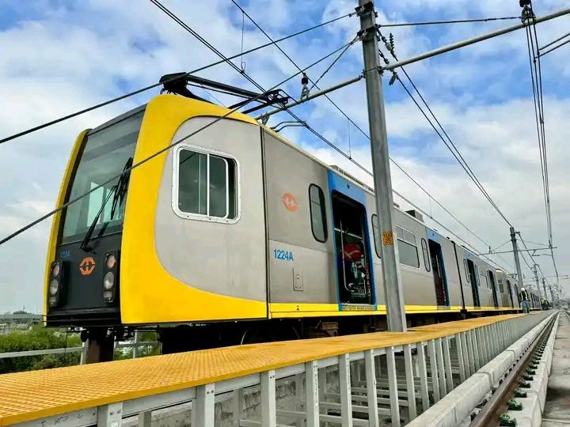
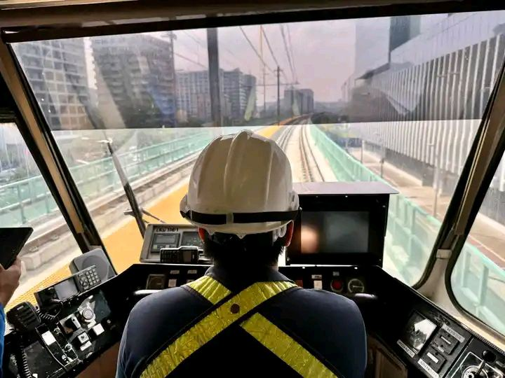
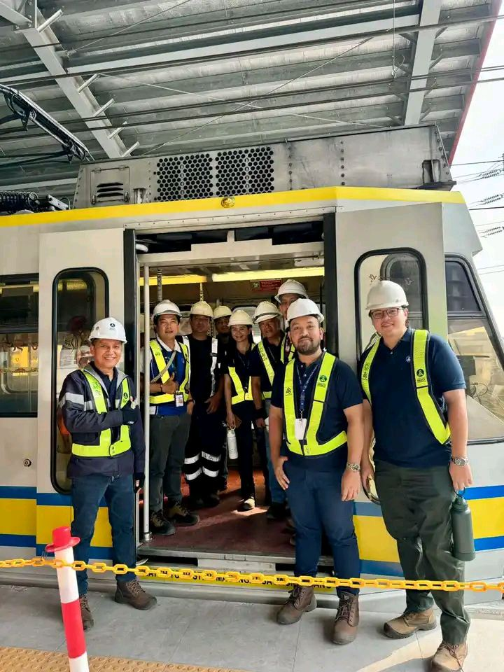
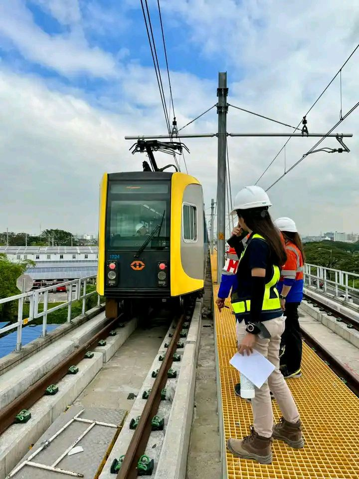
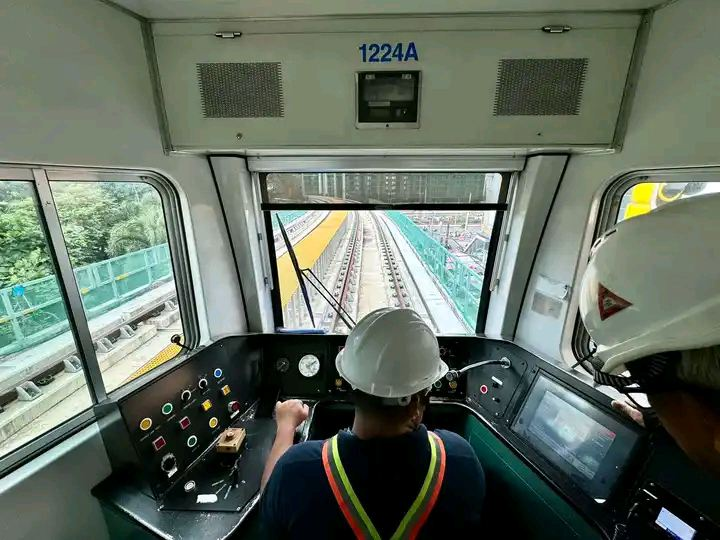
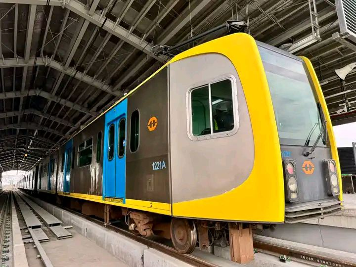
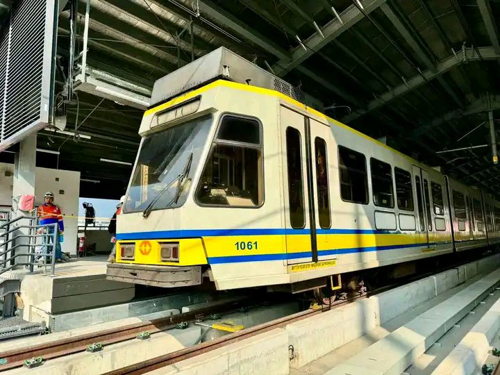
Light Rail Manila Corporation
December 20, 2023 at 10:47 AM
First test run along the LRT-1 Cavite Extension
Together with ALSTOM, the LRMC completed the
first test run along the LRT-1 Cavite Extension Phase 1 on December 19, 2023.
The activity provided a compatibility check and assessed the interface between vital infrastructure components such as:
- Train pantograph and the Overhead Catenary System
- Train wheels and rail tracks
- Train and platforms including other viaduct trackside structures.
The start of a series of test runs featured a 2nd generation train set (LRVs 1124-1126-1127-1121) and a running speed of up to 4.5kph only as part of safety precaution.
The 2nd generation train set is the widest in terms of car body making it the most strategic option to check for initial compatibility with station platforms, walkways, cableways, etc.
Further test runs are planned in the coming weeks to include other train generations of LRT-1 traveling at various speeds and load capacities.
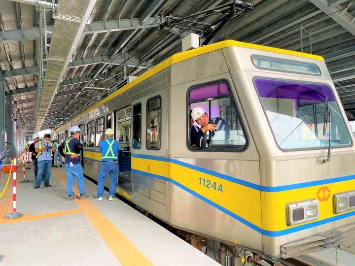
Light Rail Manila Corporation
August 20, 2023 at 5:24 PM
Roosevelt station is now Fernando Poe Jr. station
By virtue of Republic Act No. 11608 and the Light Rail Transit Authority (LRTA) Board of Directors Resolution No. 002-2023, LRMC has officially renamed LRT-1 Roosevelt to Fernando Poe Jr Station on August 20 in time for the 84th birth anniversary of the
King of Philippine Movies
and National Artist for Film.
The unveiling of new station name was attended by the late actor’s daughter Senator Grace Poe; Senator Manuel
Lito
Lapid; Former Senate President Vicente
Tito
Sotto III; Department of Transportation Undersecretary Cesar Chavez; LRTA Administrator Hernando Cabrera; LRMC President and CEO Juan F. Alfonso; Quezon City Congressman Juan Carlos
Arjo
Atayde; Quezon City LGU representatives; DOTr and LRTA officials; LRMC Management team; friends and partners from media and commuter groups.
“In renaming Roosevelt station to Fernando Poe Jr. station, we hope that Filipinos will always remember and will be inspired by how FPJ lived with values of determination, courage, and hope. LRMC shares these values and supports the promotion of local arts and culture”
- LRMC President and CEO Juan F. Alfonso
The ceremony also signifies the start of LRMC’s transition efforts to update and reflect the new station name on its overall system assets and collaterals in phases.
Ceremony
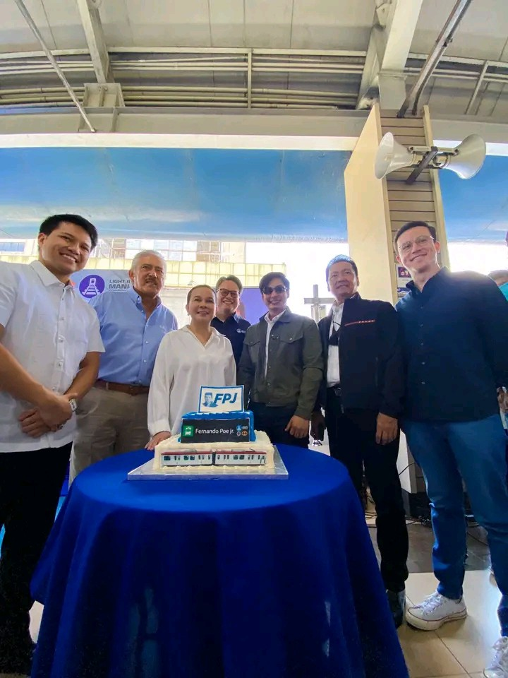
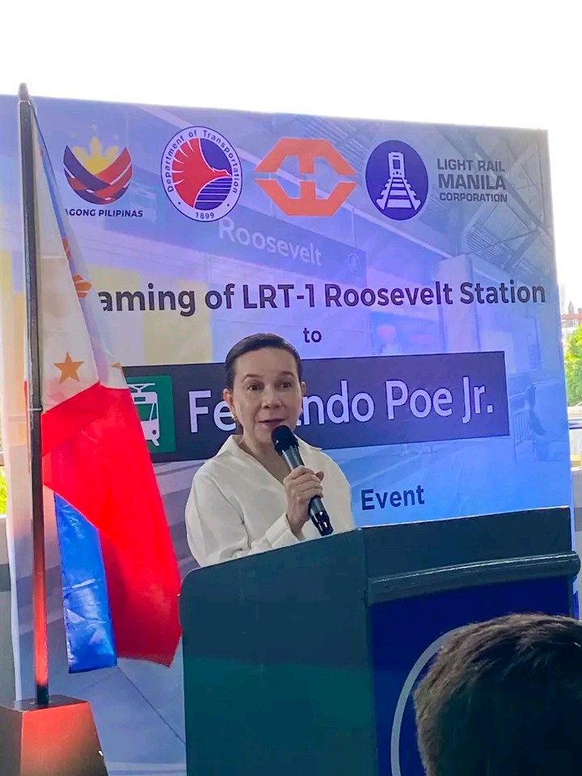
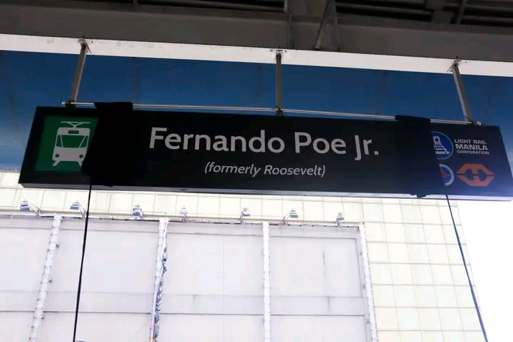
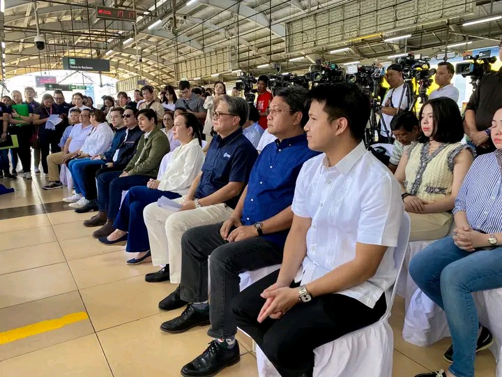
Signs
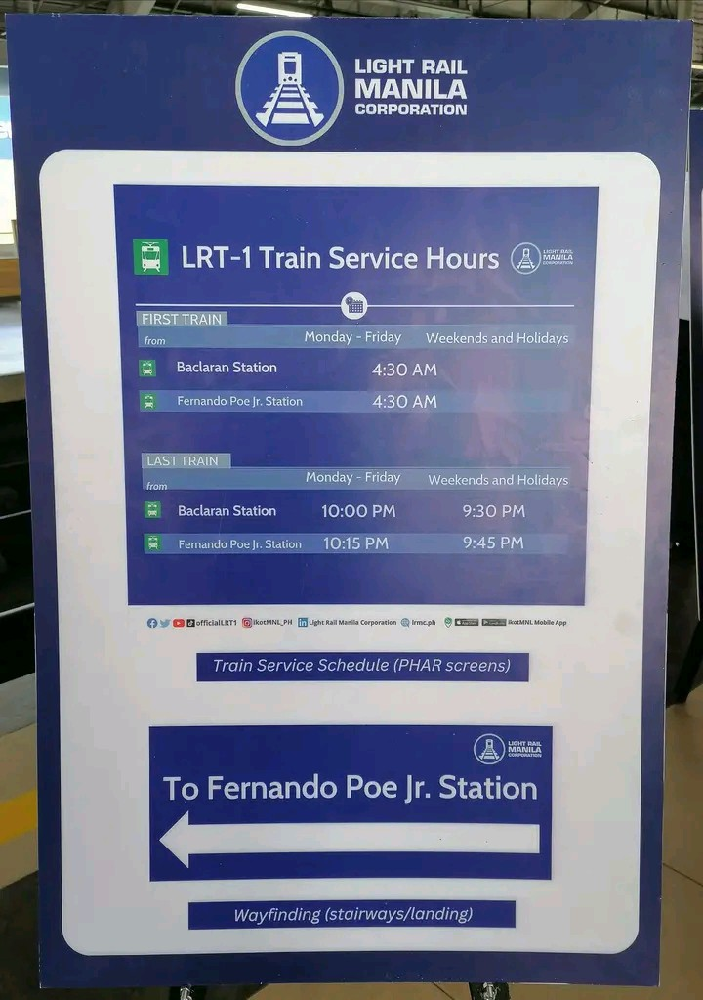
Portraits